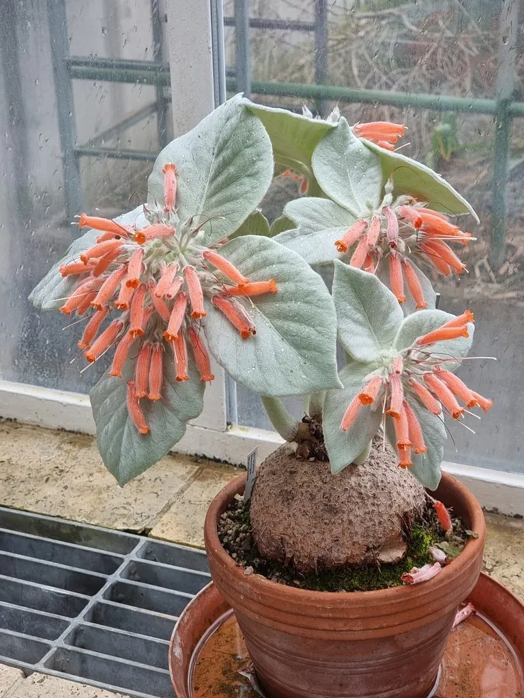

多肉植物 · 植物界
断崖女王 Sinningia leucotricha

苦苣苔科岩桐属多肉，基部膨大、密生白色绒毛，花橙红色，原产巴西断崖，是苦苣苔科中著名的块根多肉。
- 分类
- 门被子植物门纲木兰纲目唇形目科苦苣苔科属岩桐属
- 栖息环境
- 巴西东南部断崖的岩石缝隙，喜光、耐旱
- 地理分布
- 原产巴西东南部，世界各地盆栽观赏
- 保护级别
- 暂无评估
物种志
断崖女王为苦苣苔科岩桐属的多年生肉质草本，基部膨大呈球状，直径可达 10–20 厘米，表面灰褐色。叶片自基部抽出，卵形，长 10–15 厘米，表面密生银白色绒毛，叶背带紫红色。花梗自叶腋抽出，花橙红色，筒状，长 3–4 厘米，花期夏季；果实为蒴果。
断崖女王原产巴西东南部的断崖和岩石缝隙，喜阳光充足、温暖干燥和通风良好的环境，耐旱、怕积水和低温。它基部膨大、叶片密生白毛，花橙红艳丽，是苦苣苔科中著名的块根多肉。栽培用排水良好的颗粒土，生长期干透浇透，冬季落叶后控水并保持 10℃ 以上；繁殖以播种和分株为主。
形态与习性
- 基部球状，直径可达 10–20 厘米
- 叶片卵形，密生银白色绒毛
- 花期夏季，花橙红色、筒状
- 光照喜充足光照
- 水分耐旱，干透浇透
- 土壤排水良好的颗粒土
- 繁殖播种、分株
- 特点叶面白毛如天鹅绒
趣味知识
- 断崖女王的叶片密生银白色绒毛，摸起来像天鹅绒。
- 它基部膨大如球，能储存水分，原产巴西的断崖岩缝。
- 冬季落叶后进入休眠，此时应控水并保持温暖。